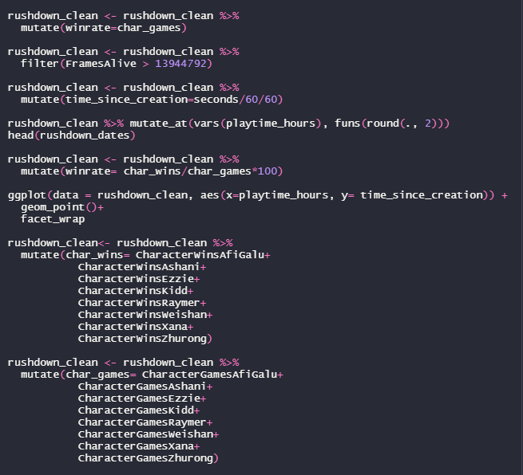
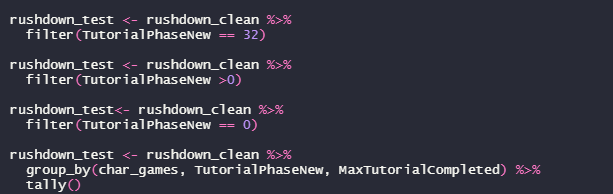
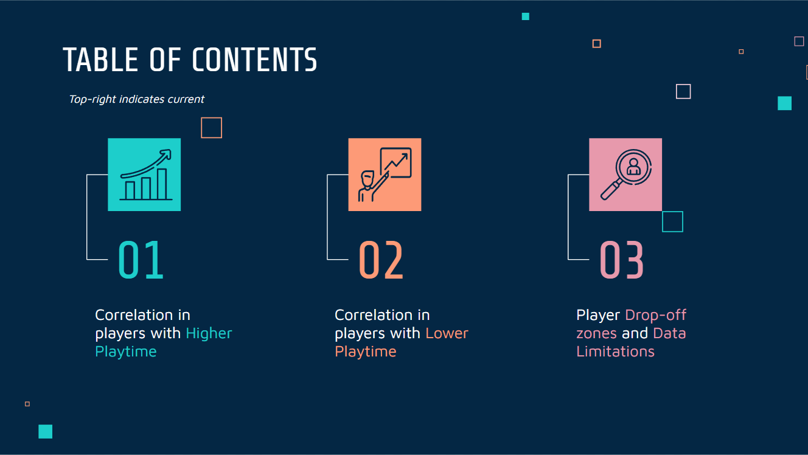
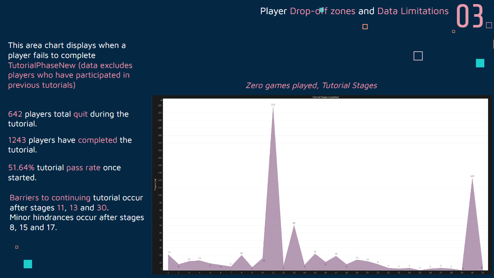
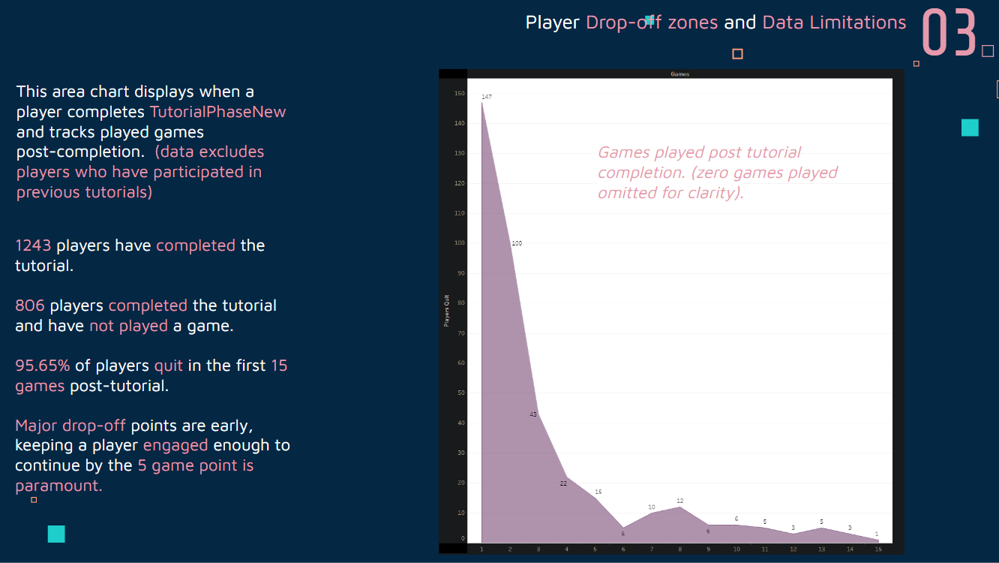
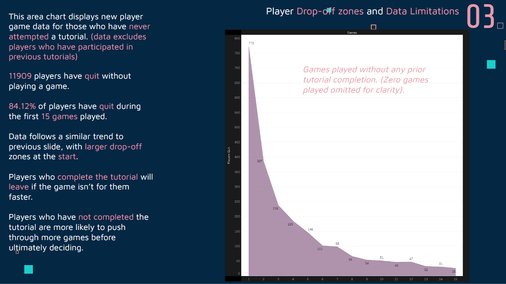

Rushdown Revolt Player Retention
Causes behind why players do not continue to play.
Cleaning
The Cleaning process was the most time consuming during this project as the developers collecting the data had too many entries to open the app. As a result I was given a CSV file with every variable collected. Many entries were obsolete or incomplete, as such i worked closely with the developers to gain insight into the dataset.
After documenting the uses for ambiguous variables, created a few new variables using existing data to better visualise the issue. Then proceeded to rebuild the clean dataset.
After investigating multiple avenues for player 'drop off' zones, i decided to hone in on the Tutorial and its stages.
The data shows most players either do not complete the quit halfway through the tutorial. From here the client requests a presentation, so i export the findings to Tableau to build some visualisations to present. Displayed is a snippet from the Tutorial data:
   Analysis and Resolution
Many of players either leave before, during or after a couple games post tutorial.
If completed, the tutorial resulted in quitting earlier by measure of average games post tutorial as compared to no completion of tutorial.
This analysis also identified bugs within the tutorial as during the tutorial stages there are severe spikes in players quitting observed at stage 11, 13 and 30. Resulting in those bugs being fixed by development enabling more players to continue..